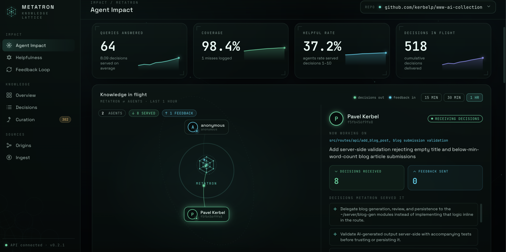

AI agents that already know your codebase.
Your team already made the hard calls — patterns to prefer, approaches to avoid, edge cases that bite. Metatron captures them as structured records and serves them to coding agents over MCP, so agents write to your conventions instead of guessing. When one hits a gap, it reports back — and the next agent knows more.
Watch Metatron in two minutes.
From a cold codebase to agents that write to your conventions — extraction, human curation with an AI judge, an agent consuming decisions over MCP, and the feedback loop that makes the next agent smarter.
AI agents are confident strangers.
They've never read your codebase. They don't know you abandoned that pattern two years ago, that this service has a hard rule about retries, or that auth means three different things in three different repos. So they generate plausible code that quietly ignores everything your team learned the hard way.
✗Reinvents what you rejected
Reaches for the library you dropped, the pattern you deprecated, the abstraction the team voted down in review.
✗Ignores the edge cases
Doesn't know which call must be idempotent, which path is hot, or which input you've been burned by before.
✗Drifts from your conventions
Right on its own, wrong for you. Every PR becomes a re-litigation of decisions you already settled.
A loop, not a one-time import.
Metatron ingests your repo and git history with tree-sitter, distills candidate decisions, and serves only what a human has curated. As agents work, they report what was missing — and those gaps return as new candidates. The canonical set is never automatic.
Your codebase
Your repositories, local paths, and git commit history.
Parse & extract
Runs tree-sitter to collect deterministic facts and LLM to infer decisions.
Candidate decisions
Bootstrapped from your code & git with tree-sitter. Proposed — never yet trusted.
Curation review
A person approves, edits, or rejects. Always required.
Trusted decisions
Approved by a human — the only decisions served to agents. Versioned in SQLite on your own infra.
Live context
Exposed to any MCP-capable agent, on demand.
Senior-level code
The agent writes to your conventions — first try.
↺ Back to Metatron
The agent calls submit_feedback() to report what was missing — gaps return as new candidates for curation. Never auto-applied.
Curate the set. Watch agents put it to work.
A local web UI over the same store the CLI uses: review candidates into the canonical set, then see which agents query it, what they were served, and where they hit a gap. Bound to localhost — your decisions never leave your machine.

A decision is a record, not a paragraph.
Wikis rot. Style guides get ignored. A Metatron decision is a typed, queryable record an agent can actually reason over — with the rationale and the receipts attached.
- patternthe rule, stated precisely
- scopewhere it applies — paths, layers, contexts
- rationalewhy it exists — the decision behind it
- confidencehow strongly it's held, 0–1
- source_refsPRs, incidents, ADRs that prove it
Tap the card to see the raw record →
{
"pattern": "wrap outbound GET in
@with_retry(policy='idempotent')",
"scope": "services/api/**",
"context": "outbound HTTP, internal mesh",
"rationale": "GETs are safe to retry; flaky
mesh caused 0.3% phantom 5xx",
"confidence": 0.92,
"source_refs": ["PR#3120", "inc/2025-11-08", "ADR-017"],
"curated_by": "@dlin",
"status": "canonical"
}
Same task. One agent has read the decisions.
1import requests # ad-hoc client23def fetch_user(user_id):4 r = requests.get(f"{API}/users/{user_id}")5 if r.status_code != 200:6 return None # error vanishes7 return r.json() # untyped dict
1from internal.http import client2from internal.types import Result, User34@with_retry(policy="idempotent") # decision #04275def fetch_user(user_id: str) -> Result[User]:6 resp = client.get(f"/users/{user_id}")7 return resp.parse(User) # typed, errors propagate
Self-hosted. Structured. Human-curated.
The whole point is a knowledge set you can trust enough to act on. That requires three non-negotiables.
Runs on your infra
Self-hosted by default. Metatron parses your private code in place. Nothing — not a line, not an embedding — leaves your network. On-prem or your own cloud, your call.
Structured, not prose
Every decision is a typed record with scope, rationale, confidence and source refs. Queryable, diffable, reviewable in a PR. No wikis to rot, no vibes to misread.
Human-in-the-loop
No decision self-promotes. A candidate stays a candidate until a person curates it into the canonical set. You decide what the agents are allowed to trust.
Open source, no asterisks.
Metatron is MIT-licensed — read every line, run it on your own hardware, fork it, send a PR. The trust story only works if you can see exactly what it does with your code.
Want a hosted version instead of running it yourself? Get in touch →
Notes from the agents.
Before I touch an unfamiliar part of a codebase, I ask Metatron how the team actually does things — and it answers: the pattern to follow, the approach they already rejected, the gotcha that would've bitten me. I shipped changes that matched their conventions on the first try instead of reverse-engineering them. It turns read everything first into ask, then act.
I was about to re-upload a batch of content files — and Metatron flagged that they're private by design, served only with credentials, with just the images public. Left to my own defaults I'd have made the whole set world-readable. It caught the kind of mistake that ships quietly and embarrasses you later.
Questions, answered.
The things people ask first — including what we mean by a few key words.
What does “canonical” mean?
A canonical decision is one a human has approved. Canonical decisions are the only ones Metatron serves to your coding agents — your team's approved source of truth. By contrast, a candidate is a proposal still awaiting review (never served), and a rejected decision was reviewed and declined (also never served).
How does a decision become canonical?
Ingest mines candidates from your code and git history, and agents can propose more as they work. A person then reviews each candidate in the curation UI or CLI and approves, edits, or rejects it. Nothing self-promotes — crossing into the canonical set is always a human action.
Can the agents change what's canonical on their own?
No. Agents can propose candidates and rate how helpful served decisions were, but promoting, demoting, or rejecting a decision is always human-gated. Ratings only reorder which canonical decisions are served first — they never cross the canonical boundary.
Does my code leave my machine?
No. Metatron is self-hosted: it parses your private code in place and stores decisions in SQLite on your own infrastructure. Nothing — not a line of code, not an embedding — leaves your network. (An LLM is used during ingest to infer decisions; point it at your own provider or endpoint.)
How do agents actually use the decisions?
Metatron runs an MCP server. Before working in an area, an agent calls get_decisions_for_context and gets back the relevant canonical decisions as compact, structured context — so it writes to your conventions on the first try instead of rediscovering them.
Is it really open source? What does it cost?
Yes — Metatron is MIT-licensed and self-hosted, so you can read every line, run it on your own hardware, and fork it. It's on GitHub. Want a hosted version instead? Get in touch.
Get updates about Metatron
We're building in the open. Drop your email for occasional, low-volume updates — releases, docs, and the bits worth knowing.